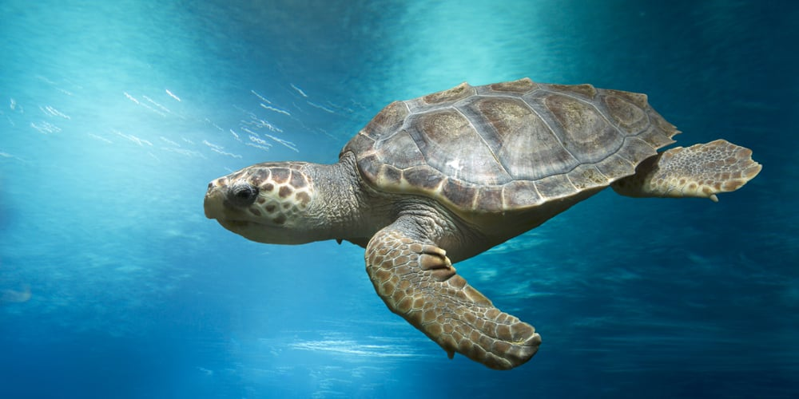

Distribution
In Sri Lanka this species is known to nest in Karaduwa, Maggona, Bundala, MArichchikaddi, Kalpitiya, Udappuwa, Hambantota, Kundakuliya, Chilaw, Negambo, MAtara, Weligama. They are common in the Bay of Bengal, seen especially along parts of the Tamil Nadu coastline. They generally tend to stay within the latitudes of 40° North and 40° south. It’s usually found in large range within the tropical and subtropical regions in the Indo-Pacific and southern Atlantic oceans, beaches of Orissa, India, Chennai, Saint Martin's Island in Bangladesh, Caribbean Sea and along the Gulf of California. It is also known as the Pacific Ridley

Breeding
Females choose to return to their beach of birth and will do this by remembering the smell of the beach through enhanced chemo sensors. Efforts are made to protect the eggs and hatchlings there should be rises in the numbers returning to nest in future.
Females usually reach a length of 60 cm before becoming reproductively active. They are not monogamous. Male sperm is stored within the female for use throughout the entire breeding season. Mating takes place just offshore of the breeding beaches. Nesting takes place during the night with the females riding in on the high tide and usually coincides with the first or last quarter of the moon.
The Olive Ridley turtle is well known for its mass nesting, with 300 or more females at a time coming ashore. Situating themselves approximately 50 m from the sea, females will dig a nest 30-55 cm deep, depositing on average 107 eggs, and then return to the sea. This entire process takes the female turtles less then an hour. Since females store sperm in their bodies for later use, a single female can nest multiple months in a row.
The eggs measure 34-43mm and hatch within 45-51 days depending on incubation temperatures. Temperature determines the sex of the turtle. The hatchlings measure 37.9-49.9mm.
Human impact & dangers
In addition, trawling and offshore drilling for oil and gas has been blamed for the death of more than 20 Olive Ridley turtles, which have washed ashore in the last ten years.
Eggs are mostly preyed by the stray dogs. Some other threats are the poaching of turtle eggs, construction on beaches. The pollution has lead to many attempts on its behalf to ingest trash such as plastic bags and Styrofoam causing them death.
Turtles are caught in the trawler's nets being dragged far behind the boats. Unable to come to the surface, the turtles suffocate and drown.
These turtles normally swim away or dive to deeper water rather than confront a predator, which often are humans. Mature females will defend themselves while on land by flapping their front forelimbs.